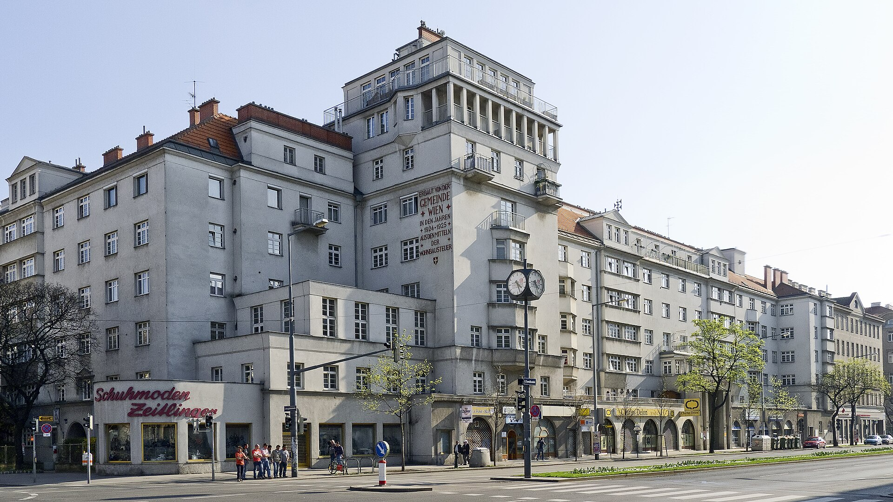
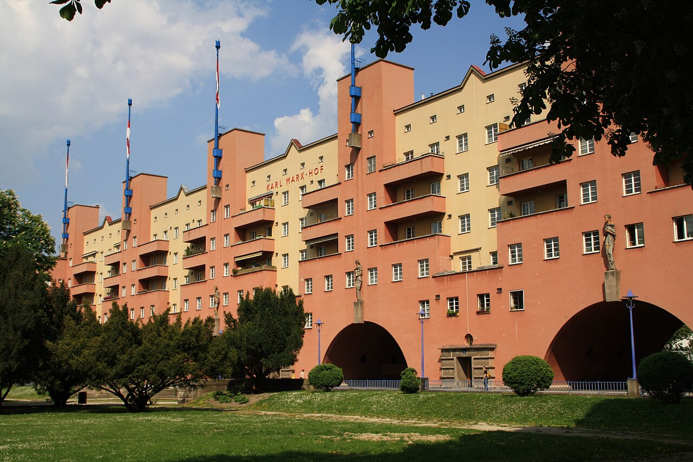
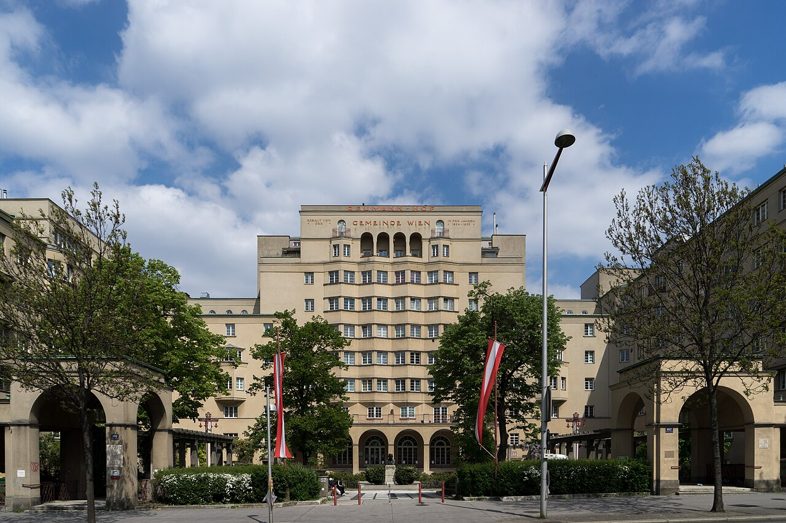
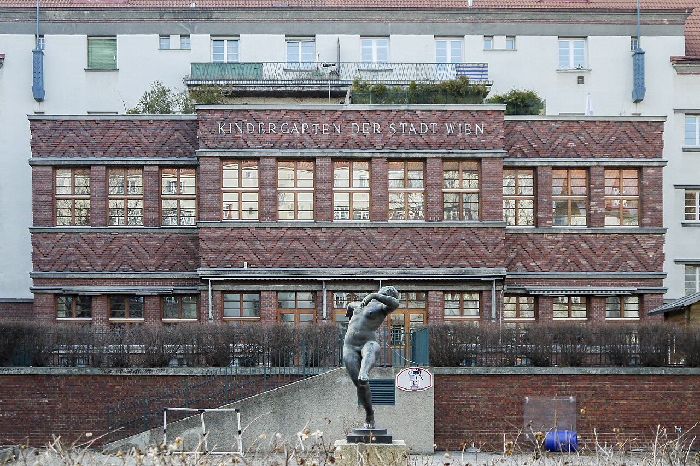
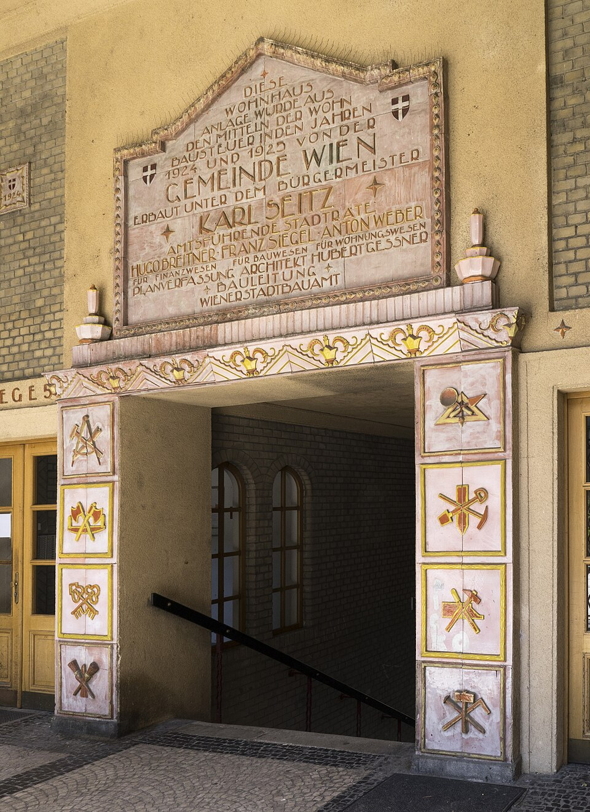

카페 첸트랄 (Cafe Central) 이야기 (5) - 노동자들의 궁전
게시: 2026-09-10T06:30:59+09:00
결국 붉은 빈의 공공임대주택 정책은 간단했습니다. 먼저 임대료를 동결시킨 뒤, 빈의 주택 시장을 사실상 완전 장악하고 있던 2%의 극소수 대부호들에게서 무자비한 세금을 뜯어내어 주택 가격을 폭락시킨 뒤, 그렇게 뜯어냈던 세금으로 그렇게 폭락한 부호들의 임대 주택을 사들여 그 돈과 토지로 노동자들을 위한 공공임대주택, 즉 게마인더바우(Gemeindebau, 지자체(Gemeinde) + 건물(Bau))를 지었던 것입니다.

(당시 지어진 게만인더바우 중 하나인 라살 호프( Lassalle-Hof)입니다.)
우리나라의 경우에도 과거 서울 팽창시 많은 국유지가 있었습니다만, 토지공사 등이 그런 토지를 택지화한 뒤 민간 건설사에 팔아서 거기에 아파트를 짓는 형태로 개발이 이루어졌습니다. 이는 토지는 있으나 돈이 없기 때문에 택한 방식이기도 했고, 또 아무래도 공무원들이 귀찮아 하면서 진행하는 사업보다는 민간 건설업자들이 눈에 불을 켜고 돈을 벌기 위해 벌이는 사업이 훨씬 더 효율이 좋고 근사한 결과를 내기 때문이기도 했습니다. 오스트리아 빈의 공무원들이라고 우리나라 공무원들보다 더 뛰어난 자질을 가지고 있고 더 사명감에 불타는 숭고한 인격체는 아닐 것입니다. 그러니 붉은 빈도 그렇게 민간 건설업자들에게 토지를 팔고 돈을 꿔줘서 민간임대주택을 건설하게 하는 것이 낫지 않았을까요? 하지만 당시 붉은 빈은 공공임대주택을 고집하여 밀어붙였고 성공시켰습니다. 거기에는 몇 가지 이유가 있었습니다. 가장 큰 이유는 당시 전후 초인플레이션 상황과 임대료 동결 때문에 빈의 민간 금융과 건설 시장이 완전히 궤멸한 상태였기 때문입니다. 그 중에서도 임대료 동결은 붉은 빈 시정부가 강제하여 민간 건설시장을 죽여버린 것이었습니다. 그렇다고 붉은 빈 시정부가 '아뿔사 이런 부작용이 있을 줄이야'라며 당황한 것은 아니었습니다. 오히려 붉은 빈은 그런 민간 주도 주택 개발이 가져올 부작용을 누구보다 경계했습니다. 민간 건설사에 맡길 경우, 수익성을 맞추기 위해 또 다시 과거의 좁고 어둡고 비위생적인 '친스카세르너'(Zinskaserne, 월세병영)를 지어대거나 반대로 부유층을 위한 고급 주택만 지을 것이 뻔했습니다. 당시 빈은 가난한 노동자 계층이 압도적으로 많았는데, 그들은 넓고 번듯한 임대주택에 시장 가격을 내고 들어갈 돈이 없었기 때문이었습니다. 거기에 덧붙여, 붉은 빈의 주택 정책에는 사회당의 정치적 목적이 분명히 들어 있었습니다. 즉 노동자 계급의 번영을 통한 체제 홍보와 표밭 다지기를 주택 정책을 통해서 이루려 한 것입니다. 정치 선동이라는 것이 사실 별 것 아닙니다. 자신들에게 표를 주면 잘 살게 해주겠다는 것을 말만 번지르르한 약속이 아니라 결과로 입증해보이면 되는 것입니다. 따라서 붉은 빈은 노동자들에게 기존의 '친스카세르너'식 민간임대주택과는 차원이 다른 궁전 같은 공공임대주택을 공급했고, 그것도 아주 낮은 임대료만 받으며 진행했습니다. 어떻게 그게 가능했을까요?

(정치적 목적이 분명했기 때문에 그렇게 지어진 대표적인 공공임대주택 단지에는 아예 공산주의의 아버지 맑스의 이름을 붙여 카알-맑스-호프(Karl-Marx-Hof)라고 명명했습니다. 이 거대 주택단지에는 1,382세대의 아파트가 있는데, 각 가구 면적은 10평에서 18평 정도(30–60 m²)로 작은 편입니다. 수익을 추구하는 시장 논리에 따르지 않다보니, 전체 156,000 m²의 대지 중 불과 18.5%에만 건물을 지었으며, 나머지 공간은 놀이터와 정원으로 조성되었습니다. 약 5,000명의 인구를 수용하도록 설계된 이 단지 내에는 공동 세탁소, 목욕탕, 유치원, 도서관, 병원, 사무실 등 다양한 편의시설이 갖추어져 있습니다. 당시로서는 그야말로 '노동자들을 위한 궁전'이었습니다.)

(1924년~1926년 건축가 후베르트 게스너(Hubert Gessner)의 설계로 지어진 공공임대주택 단지 로이만호프(Reumannhof)입니다. 주변의 여러 공공주택들과 함께 도로를 따라 연결되어 '노동자 계급의 링슈트라세(Ringstraße des Proletariats)'를 형성하는 대표적 주거 단지입니다. 가구당 면적은 당시 노동자 4인 가구에게 적합했던 25~60m²(약 7.5~18평)였고, 이런 작은 아파트가 478가구, 19개 상점 및 사업장이 있었습니다. 가장 놀라운 부분은 당시 지어진 공공임대주택들 대부분은 여전히 공공임대주택으로 현역 활동 중이며, 지금도 빈 시민들의 소중한 주거공간으로 활용되고 있다는 것입니다. 가령 여기 로이만호프는 시대 상황을 반영하여 리모델링 및 세대 합병을 거쳐 가구 수는 줄고, 가구당 면적은 41~90m²(약 12.4~27.2평)로 확장되었습니다.) 보통 주택 정책을 펼칠 때는 당연히 투입 자금의 회수를 통해 그 사업의 지속성을 추구합니다. 그러나 붉은 빈의 상황은 특수했습니다. 2%에 불과한 소수의 대부호들이 주택과 토지를 독점하고 있었고, 따라서 표 계산을 하지 않고 그들에게서 세금을 뜯어내어 재원을 마련할 수 있었습니다. 그렇게 하다보니 시정부가 굳이 빚을 내서 지방채를 발행할 필요도 없었습니다. 이때의 공공임대주택 건설 사업은 전액 현금으로 집행되었습니다. 흔히 좌파가 집권하면 무분별한 국채 발행으로 나라 망한다고 하지만 그건 전혀 실제와 맞지 않는 주장일 뿐이고, 미국 우파인 레이건 집권기나 일본 우파인 아베 집권기 모두 국가 부채가 급증했습니다. 진짜 좌파가 집권하면 이렇게 세금을 걷지 굳이 온 국민이 부담하게 되는 국채를 찍지 않나 봅니다.
지속성을 추구하지 않은 가장 결정적인 이유는 빈의 토지는 유한한 것이라는 점이었습니다. 따라서 대부호들에게서 토지를 빼앗아 공공임대주택을 짓는 사업이 영구히 지속될 필요도 없었습니다. 공공임대주택이 전체 주택 시장에서 적정 비율로 증가하고나면, 그 사업은 중단해도 되는 것이었습니다. 또 그런 식으로 노동자 계층이 임대료 부담을 덜어내고 저축을 하여 어느 정도 부를 축적하게 되면, 그때 가서 임대료를 올려도 충분하다고 보았습니다. 하지만 공무원들이 그렇게 근사한 주택을 설계하고 시공할 수 있었을까요? 당연히 없었습니다. 하지만 여기서도 다시 시대의 특수성이 작용했습니다. 붉은 빈은 자체 건축국(Stadtbauamt) 산하에 건축가들을 대거 채용하거나 위촉했습니다. 만약 민간 건설 시장이 호황이었다면 실력 있는 건축가들은 쥐꼬리만한 봉급을 받는 공무원 노릇은 하지 않으려 했을 것입니다. 그러나 당시 건설 시장은 폭망한 상태였습니다. 붉은 빈 시기 동안 199명의 건축가가 참여해서 382개 단지를 설계했는데, 당시 대표적인 공공임대주택 단지이던 카를 마르크스 호프(Karl-Marx-Hof)를 설계한 카알 엔(Karl Ehn) 같은 인물도 아예 빈 시청 소속으로 들어가 활동한 경우였습니다.
(카알 엔입니다. 그는 근대 건축의 거장 오토 바그너(Otto Wagner) 밑에서 건축을 배웠으며, 고전적 웅장함과 근대적 기능주의를 결합한 '슈퍼블록(Superblock)' 주거 형태를 완성했으며, 주거를 단순한 개인의 자산이 아닌 모든 시민이 누려야 할 공공 복지 인프라로 끌어올린 근대 공공주택 건축의 선구자입니다.) 물론 공무원들이 직접 벽돌을 쌓고 골조를 세우는 공사를 한 것은 아니었습니다. 실제 공사는 민간 건설 회사와 각종 기능공, 장인들에게 하청을 주었습니다. 당시 독일 등 다른 국가의 사회주의 계열 지자체들은 비용 절감을 위해 표준화된 조립식 공법과 수수하고 소박한 설계를 선호했는데, 붉은 빈은 정반대 방향을 택했습니다. 일부러 손이 많이 가는 전통 공법을 고수하면서 석공, 조각가, 타일공 등 다양한 분야의 장인들을 최대한 폭넓게 끌어들였습니다. 당시 지어진 공공임대주택 외벽에 남아 있는 화려한 조각과 장식, 세라믹 타일 같은 것들이 바로 이 정책의 흔적입니다.

(그 당시 지어진 또 다른 공공임대주택 단지인 라벤호프(Rabenhof)의 유치원 건물입니다. 그 앞에 서있는 동상은 Otto Hofner의 '춤추는 사람들'(Tanzende)이라는 작품입니다.)

(위에서 소개한 로이만호프(Reumannhof)의 장식 중 하나입니다. 여기엔 '이 주거 단지는 1924년과 1925년에 주택건설세 재원으로 카를 자이츠 시장 재임 당시 빈 시정부에 의해 건설되었음'이라는 문구와 함께 이 단지 건설에 참여한 주요 인사들, 가령 재원을 마련한 세금 드라큘라 휴고 브라이트너 등의 이름이 새겨져 있습니다.) 왜 굳이 비효율적인 방식을 택했을까요? 이 주택 사업 자체가 절반 정도는 '실업 대책'이었기 때문입니다. WW1 패전 직후 빈은 실업률이 살인적인 수준이었는데, 시정부 입장에서는 공사를 빨리 끝내는 것보다 최대한 많은 사람에게, 최대한 오래 일감을 주는 것도 중요한 목표였습니다. 그러니 효율적인 대형 건설사 몇 군데에 몰아주기보다, 여러 소규모 업체와 개인 장인들에게 일감을 널리 분산시키는 쪽을 의도적으로 선택한 것입니다. 그러면 공사비가 더 올라가고 예산이 낭비되지 않았을까요? 당연히 그랬습니다. 그러나 다시 한 번 상기시켜 드리지만, 재원은 소수의 대부호들의 고혈을 빨아내서 마련하고 있었습니다. 어떻게 보면 셔우드 숲의 로빈 훗은 무력으로 귀족들의 금화를 털어서 가난한 농부들에게 나누어 주었지만, 붉은 빈은 세금을 통해 대부호들의 주택과 토지를 털어 노동자들에게 일자리를 주고 살 곳도 마련해준 셈이었습니다. 덕분에 WW1 패전의 경제적 어려움과 그 이후 전세계를 덮친 세계 대공황 속에서도, 빈의 건설 노동자들은 붉은 빈 약 15년 동안 끊이지 않고 안정적인 일자리를 얻을 수 있었습니다. 이렇게 보면 그야말로 붉은 빈 시대는 노동자들의 황금기처럼 느껴집니다. 그러나 여러분도 다 아시다시피 결국 붉은 빈은 무너졌고 그 자리엔 무시무시한 나치가 들어섭니다. 왜 그런 결말을 맞이했을까요? 붉은 빈의 사회주의적 주택 정책에는 본질적인 한계도 있었지만, 무엇보다 외부적 요소가 컸습니다. 스타워즈는 아니지만 다음에는 '제국의 역습'을 보시겠습니다.
(원래 혁명이라는 것이 열혈분자들이 하는 것이지만, 모든 것은 적당히 해야지 가난한 사람들이건 부자들이건 어느 한쪽을 극단적으로 몰아붙이면 반드시 반격이 있기 마련입니다.)